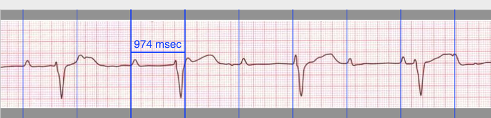

Calipers
CalipersAdding and deleting calipers
Calipers come in three flavors. Calipers with a horizontal crossbar and vertical sidebars are used to make time measurements and are called time calipers. Calipers with a vertical crossbar and horizontal sidebars are used to make amplitude measurements and are called, you guessed it, amplitude calipers. Finally angle calipers are used to measure angles, such as the 𝞫 angle in Brugada syndrome.
Add Calipers
Add calipers by clicking on one of the caliper icons on the toolbar, or use the Caliper menu to do this.
Figure 1: Add calipers from the toolbar
Selecting Calipers
In order to make measurements or calibrate, it is necessary to "select" a single caliper when there are multiple calipers on the screen. A single mouse click or single tap on any part of a caliper selects it. A selected caliper is evident because it is a different color (by default red, but you can change this) than unselected calipers (by default blue). Single-tapping or single-clicking a selected caliper will unselect it. Only one caliper at a time can be selected.
Figure 2: Three different types of calipers (time, amplitude, and angle). The red time caliper is selected.
Deleting Calipers
Double-tap on the trackpad or double-click with a mouse on a caliper to delete it. A selected caliper (highlighted) can be deleted using the keyboard Delete key, or the Caliper | Delete Selected Caliper menu item. All calipers can be deleted at once using Command-Delete on the keyboard, or the Caliper | Delete All Calipers menu item. Note that after calibration, even if you delete all calibrated calipers, new calipers that are added will retain calibration.
Caliper Colors
If you right-click on a caliper with your mouse, or two-finger click on your trackpad, the secondary menu will appear. The first item on this menu is Caliper Color. Click this option, and the color selector appears. Use the color selector to change the color of the caliper you clicked on. The color change will only affect the individual caliper you clicked on. You can change the default caliper color of new calipers by changing Settings.
Marching calipers
Right-clicking a time caliper with your mouse, or clicking with two fingers on the trackpad will open the secondary menu with the option Marching Caliper available. Click this and the time caliper will be converted to a marching caliper. Vertical caliper lines will appear equal to the caliper width on either side of the caliper. This is very useful to assess the regularity or irregularity of a rhythm, or to detect P waves marching through a tachycardia or during heart block. Select Marching Caliper again to change the marching caliper back to normal again.

Figure 3: A marching caliper
Moving calipers
Moving
Calipers can be moved. Use the left mouse button or press and hold the trackpad with your finger over the crossbar area of a time or amplitude caliper to grab it. To grab angle calipers, select the top (apex) of the angle where the two lines join together. Drag the mouse or your finger to move the caliper as a unit.
Stretching (opening and closing)
If the cursor is positioned over either the left or right sidebars of a time caliper (or top or bottom bars of an amplitude caliper) clicking with the left mouse button or holding your finger down on the track pad and then dragging will move that caliper bar by itself. In this way you can widen or narrow the caliper interval. Note that you cannot move both bars at the same time. When you move one caliper bar, the other one always stays fixed. With angle calipers, select either of the two bars of the angle a little distance away from the apex and drag to open and close the angle.
By combining movements, you can place a caliper anywhere on an ECG image to make measurements.
Tweaking
Tweaking or micromoving is a way to more finely control caliper movement. When you tweak a caliper’s position, you use the keyboard arrow keys to move a caliper component or the entire caliper a fraction of a point in any direction. If you right-click on a caliper with a mouse, or two-finger click on the trackpad, you bring up a secondary menu that includes the option Tweak Caliper Position. Click on this option. A message will appear showing which component of the caliper you clicked on (left bar, right bar, top bar, bottom bar, crossbar, or apex, depending of the type of caliper). Right-click or two-finger click on a different component to change which component you want to move. Then use the keyboard arrow keys to move the selected caliper component. To finely adjust the caliper component position, use the command + arrow keys. Note that if you select the crossbar, or apex of an angle caliper, the arrow keys cause the caliper to move as a unit. Selecting any other component moves that component. Select Escape, or right-click or two-finger click away from a caliper to turn off tweaking.